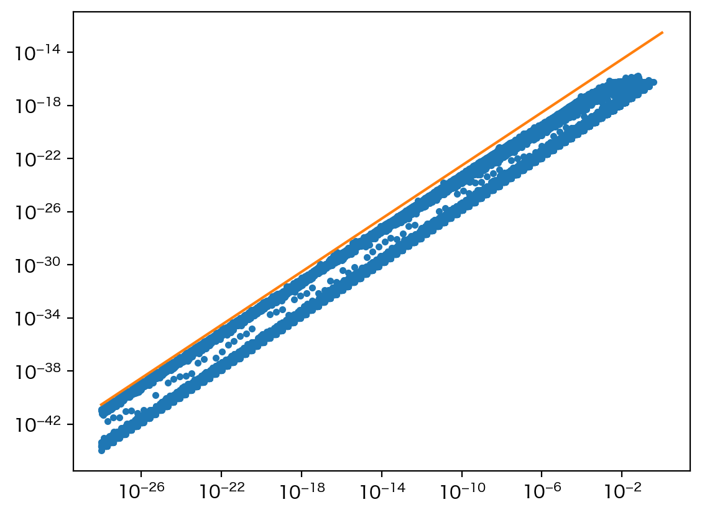

表が出る確率が0.5の硬貨を10枚投げたとき、表が $r$ 枚出る確率 $q_r$ を $r = 0,1,2,\ldots,10$ について求めるには、次のようにします（2項検定参照）。
from scipy import stats stats.binom.pmf(range(11), 10, 0.5)
array([0.00097656, 0.00976563, 0.04394531, 0.1171875 , 0.20507812,
0.24609375, 0.20507812, 0.1171875 , 0.04394531, 0.00976563,
0.00097656])
対称性 $q_r = q_{10-r}$ を満たしているようです。
さて、「表が $r$ 枚出た」という事象の（両側）$p$ 値は、$q_i \leq q_r$ を満たすすべての $q_i$ の和と定義されます。これを $r = 0,1,2,\ldots,10$ について求めてみましょう。
import numpy as np q = stats.binom.pmf(range(11), 10, 0.5) np.array([q[q <= q[r]].sum() for r in range(11)])
array([9.76562500e-04, 2.14843750e-02, 1.09375000e-01, 3.43750000e-01,
5.48828125e-01, 1.00000000e+00, 7.53906250e-01, 3.43750000e-01,
1.09375000e-01, 2.14843750e-02, 1.95312500e-03])
あれ？ 対称であるはずの $p$ 値が対称でなくなってしまいました。
np.array にすると丸められた値が表示されるのですが、実際は数値計算の誤差があったのです。
list(q)
[ 0.0009765624999999993, 0.009765625000000009, 0.043945312500000076, 0.11718750000000004, 0.20507812499999997, 0.2460937500000002, 0.205078125, 0.11718750000000004, 0.043945312500000076, 0.009765625000000009, 0.0009765625 ]
このような状況で、<= を使って比較することは危険です。ほんの少し違っていることも許容するように、右辺に非常に小さい値を加えましょう。よく使われる値は np.finfo(np.float64).eps（または同じことですが sys.float_info.epsilon）で、$2.22 \times 10^{-16}$ ほどの値です。
np.array([q[q <= q[r] + np.finfo(np.float64).eps].sum() for r in range(11)])
array([0.00195312, 0.02148438, 0.109375 , 0.34375 , 0.75390625,
1. , 0.75390625, 0.34375 , 0.109375 , 0.02148438,
0.00195312])
うまくいきました。これが正しい値です。
場合によっては、右辺をそれより大きい最小の値で置き換えることがあります。
np.array([q[q <= np.nextafter(q[r], np.inf)].sum() for r in range(11)])
array([9.7656250e-04, 2.1484375e-02, 1.0937500e-01, 3.4375000e-01,
7.5390625e-01, 1.0000000e+00, 7.5390625e-01, 3.4375000e-01,
1.0937500e-01, 2.1484375e-02, 1.9531250e-03])
でも、これでは一番最初の値が正しくありません。
ちなみに、先ほどの np.finfo(np.float64).eps は1より大きい最小の値と1との差に相当し、機械エプシロン（machine epsilon、計算機エプシロン、マシンエプシロン）と呼ばれます。
np.nextafter(1, np.inf) - 1
np.float64(2.220446049250313e-16)
さらに、2つの数が近いかどうかを判断する np.isclose() を使う方法もあります。
np.array([q[(q < q[r]) | np.isclose(q, q[r])].sum() for r in range(11)])
これでも正しい値が得られました。np.isclose(a, b, rtol=1e-05, atol=1e-08) は
np.absolute(a - b) <= atol + rtol * np.absolute(b)
と同じ意味です。デフォルトの相対許容誤差 rtol、絶対許容誤差 atol は大きめに設定されているので、もっと小さくていいかもしれません。
より具体的に、q = stats.binom.pmf(range(n+1), n, 0.5) が q[i] と q[n-i] でどれくらい違っているかを、横軸に min(q[i], q[n-1]) を、縦軸に差の絶対値をとって、プロットしてみましょう。
import numpy as np
from scipy import stats
import matplotlib.pyplot as plt
x = []
y = []
nary = list(range(2,100)) + list(range(100,1000,10)) + list(range(1000,10000,100))
for n in nary:
q = stats.binom.pmf(range(n+1), n, 0.5)
for i in range(int((n+1)/2)):
a = min(q[i], q[n-i])
b = np.abs(q[i] - q[n-i])
if a > 1e-28 and b > 0:
x.append(a)
y.append(b)
plt.plot(x, y, ".")
plt.xscale("log")
plt.yscale("log")
xe = np.array([1e-28, 1])
ye = xe * 3e-13
plt.plot(xe, ye)
plt.savefig("251217a.webp", bbox_inches="tight", pil_kwargs={"lossless": True})

どうやら絶対誤差より相対誤差を使うほうがよさそうです。先ほどの計算は
np.array([q[q <= q[r] * (1 + 3e-13)].sum() for r in range(11)])
くらいでいいのでしょう。ちなみに、stats.binomtest() は相対誤差 1 + 1e-7 を使っているようです。